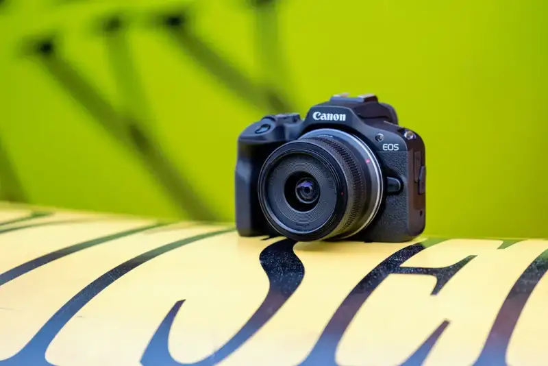
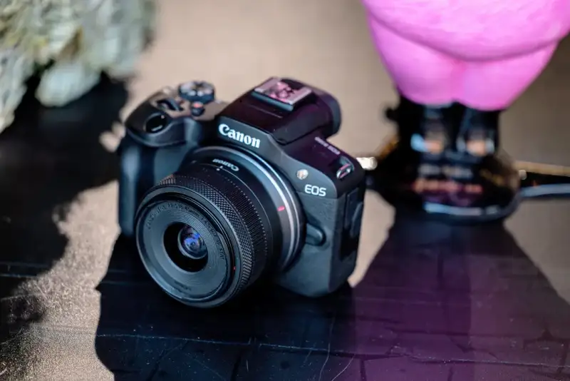
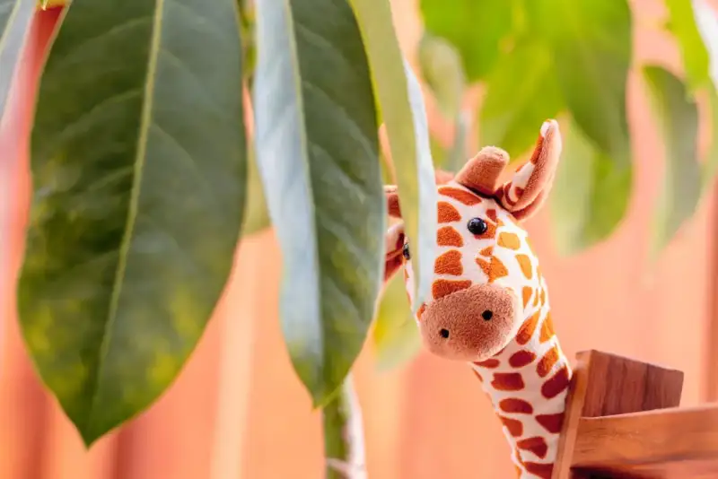
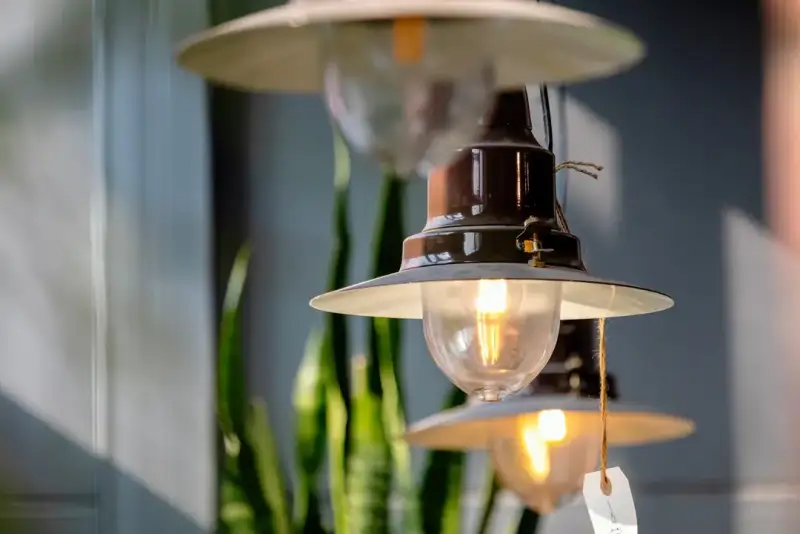
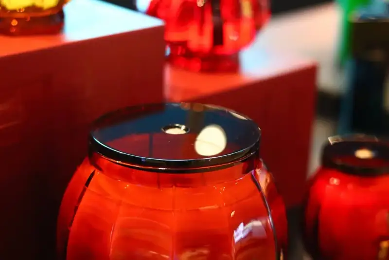
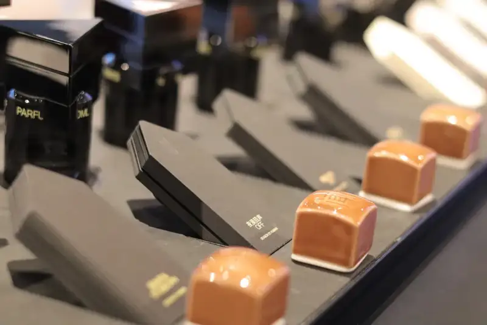
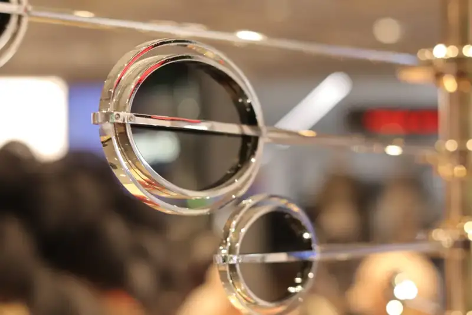

If there is a small tool that slips into any pocket, is light, and takes great photos, it must be the Canon EOS R100. The kit costs only a bit over 3,000 yuan, which is very kind to my wallet. Let it be my handy little helper for finding the good in daily life.


This little sprite weighs just over 300 g. It is the smallest and lightest model in the EOS R series. When you travel or go out shopping, it is no burden to carry or to shoot with for a long time. So we are more willing to take it out. It is small, but it carries the high image quality of the EOS R mirrorless line. It has about 24.1 effective megapixels. It also has shooting-assist features that are friendly to beginners. Using it to record great moments on a trip or small moments of daily life is simple and easy. It can produce results on par with a professional photographer.

EOS R100+RF70-200mm F4 L IS USM
Focal length: 73mm Aperture: f/4 ISO:200 Exposure time: 1/100s White balance: Auto
EOS R100+RF50mm F1.8 STM
Focal length: 50mm Aperture: f/1.8 ISO:200 Exposure time: 1/80s White balance: Auto
With the huge Canon RF lens lineup behind it, our choice of lenses is almost dazzling. We can pair the right RF lens with our shooting needs and the scene. Taking this set out to shop and shoot small street subjects or portraits is very convenient.
EOS R100+RF50mm F1.8 STM
Focal length: 50mm Aperture: f/1.8 ISO:500 Exposure time: 1/80s White balance: Auto
EOS R100+RF50mm F1.8 STM
Focal length: 50mm Aperture: f/1.8 ISO:100 Exposure time: 1/160s White balance: Auto
This camera also has our in-house Dual Pixel CMOS AF autofocus. It focuses fast and accurately. When I shoot on the street, I can move the focus point freely to get the composition and focus I want. Even at the edge of the frame, the focus is fast and accurate.
EOS R100+RF70-200mm F4 L IS USM
Focal length: 70mm Aperture: f/4 ISO:400 Exposure time: 1/160s White balance: Auto

EOS R100+RF70-200mm F4 L IS USM
Focal length: 200mm Aperture: f/4 ISO:640 Exposure time: 1/1000s White balance: Auto
The R100's eye detection is really strong. It detects eyes accurately and fast. With a burst rate of 6.5 frames per second, it takes no effort to catch young women running and jumping. It always records the best moment.
EOS R100+RF50mm F1.8 STM
Focal length: 50mm Aperture: f/1.8 ISO:100 Exposure time: 1/160s White balance: Auto
EOS R100+RF50mm F1.8 STM
Focal length: 50mm Aperture: f/1.8 ISO:100 Exposure time: 1/200s White balance: Auto
I also found a feature that boosts the joy of shooting: shooting assist, such as Creative Assist and creative filters. For beginners, this is a must-have feature that lowers the barrier to photography and makes it more enjoyable. Just choose the A+ Scene Intelligent Auto mode, and you can pick from 11 preset looks the one you like best or the one that fits the scene. Personally, I like the VIVID and SOFT looks. They work well for everyday shooting.
VIVID
EOS R100+RF50mm F1.8 STM
Focal length: 50mm Aperture: f/2.8 ISO:2000 Exposure time: 1/160s White balance: Auto

VIVID
EOS R100+RF50mm F1.8 STM
Focal length: 50mm Aperture: f/2.8 ISO:6400 Exposure time: 1/160s White balance: Auto
VIVID
EOS R100+RF50mm F1.8 STM
Focal length: 50mm Aperture: f/2.8 ISO:400 Exposure time: 1/200s White balance: Auto

SOFT
EOS R100+RF50mm F1.8 STM
Focal length: 50mm Aperture: f/2.5 ISO:6400 Exposure time: 1/160s White balance: Auto

SOFT
EOS R100+RF50mm F1.8 STM
Focal length: 50mm Aperture: f/3.2 ISO:2500 Exposure time: 1/160s White balance: Auto
SOFT
EOS R100+RF50mm F1.8 STM
Focal length: 50mm Aperture: f/2.8 ISO:1000 Exposure time: 1/160s White balance: Auto
To my surprise, this sprite also has a pop-up flash. With this flash, low light feels much easier. Using the flash well also opens up many looks, such as a Y2K style or a cool, pale skin effect in portraits. Even when shooting small street subjects, the result looks good.
EOS R100+RF50mm F1.8 STM
Focal length: 50mm Aperture: f/1.8 ISO:200 Exposure time: 1/60s White balance: Auto
EOS R100+RF50mm F1.8 STM
Focal length: 50mm Aperture: f/1.8 ISO:160 Exposure time: 1/60s White balance: Auto
After half a day of shooting, the overall feel is quite good. The light, handy body does not make shopping uncomfortable. It is very convenient to use and carry. When you shoot with the viewfinder, reflections do not block the frame. Whether I shoot small street subjects or catch a cute moment of a young woman, it works well.
EOS R100+RF50mm F1.8 STM
Focal length: 50mm Aperture: f/1.8 ISO:100 Exposure time: 1/400s White balance: Auto
The texture of the image and Canon's famous color science make the photos quite satisfying. With such a small camera, one that slips easily into a pocket and offers great value, as a good helper for daily recording, it truly boosts everyday happiness.